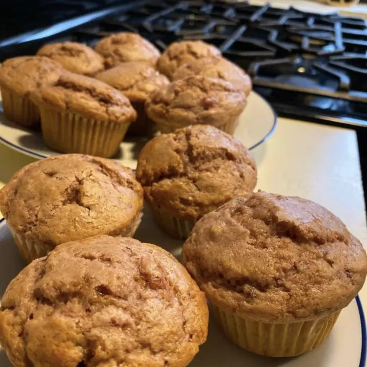

Cranberry Sauce Muffins
Back to home page

Description
Leftover cranberry sauce is obviously great on turkey sandwiches, and it's even delicious warmed up and spooned over ice cream or pancakes, but have you tried it in muffins? This easy recipe for cranberry muffins uses a cup of your smooth or chunky leftover cranberry sauce. The batter comes together in minutes and the moist, sweet muffins are perfect for a post-Thanksgiving breakfast or snack.
Ingredients
- Flour
- Sugar
- Baking powder
- Spices and flavorings
- Leftover craneberry sauce
- Milk
- Oil
- Egg
Steps
- Mix the wet ingredients: Beat the cranberry sauce, milk, oil, egg, and vanilla until well-combined.
- Mix the dry ingredients: Mix the remaining ingredients in a separate bowl, then slowly incorporate the dry mixture into the wet mixture.
- Bake the muffins: Pour the batter into lined muffin cups and bake in a preheated oven until the muffins are golden brown.